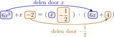

Formules van Vieta
I Eén wortel is genoeg
Stel dat je de vergelijking
\[ 6x^2+x-2=0 \]
moet oplossen. Iemand verklapt dat \(x_1=\dfrac {1}{2}\) een oplossing is. Je kan dat meteen controleren:
\[ 6\left (\frac {1}{2}\right )^2+\frac {1}{2}-2 =\frac {3}{2}+\frac {1}{2}-2=0. \]
Moeten we nu nog de discriminant berekenen om de andere oplossing te vinden? Nee. De bekende oplossing geeft ons een factor, en met die factor vinden we de andere oplossing bijna zonder rekenwerk.
In dit hoofdstuk noemen we een oplossing van een vergelijking ook een wortel. We gebruiken de namen \(x_1\) en \(x_2\) voor de twee wortels.
1 Van een wortel naar een factor
Je kent al het verband
\[ x_1\text { is een wortel} \iff x-x_1\text { is een factor}. \]
Omdat \(x_1=\dfrac {1}{2}\) een wortel is, kunnen we dus schrijven
\[ 6x^2+x-2=\left (x-\frac {1}{2}\right )(\mathord {?}). \]
We zoeken de tweede factor. Daarvoor kijken we eerst naar de buitenste termen.
-
• Deel de term \(6x^2\) door \(x\). Dat geeft \(6x\).
-
• Deel de constante term \(-2\) door \(-\dfrac {1}{2}\). Dat geeft \(4\).

De ontbrekende factor moet dus \(6x+4\) zijn. We controleren door uit te werken:
\[ \left (x-\frac {1}{2}\right )(6x+4) \opl {=6x^2+4x-3x-2=6x^2+x-2.} \]
Daarmee is de vergelijking volledig ontbonden:
\[ \left (x-\frac {1}{2}\right )(6x+4)=0. \]
Een product is nul als minstens één factor nul is. De tweede factor geeft
\[ 6x+4=0 \iff x=-\frac {2}{3}. \]
De twee wortels zijn dus \(x_1=\dfrac {1}{2}\) en \(x_2=-\dfrac {2}{3}\).
We gebruikten geen nieuwe formule. We combineerden alleen twee bekende ideeën: een wortel geeft een factor, en de buitenste termen bepalen de buitenste termen van het product.
2 Probeer het zelf
We weten dat \(x_1=2\) een wortel is van \(3x^2-5x-2=0\).
Stap 1. De bekende wortel geeft de factor
\[ x-x_1=\opl [3cm]{x-2}. \]
Stap 2. Zoek de buitenste termen van de tweede factor:
\[ \frac {3x^2}{x}=\opl [2.5cm]{3x} \qquad \text {en}\qquad \frac {-2}{-2}=\opl [2.5cm]{1}. \]
Stap 3. Vul aan en werk het product uit als controle:
\[ 3x^2-5x-2=(x-2)\opl [3cm]{(3x+1)}. \]
Stap 4. Stel de nieuwe factor gelijk aan nul:
\[ \opl [2.5cm]{3x+1}=0 \iff x_2=\opl [2.5cm]{-\frac {1}{3}}. \]
Oefening 1
Probeer bij elke vergelijking de voorgestelde eenvoudige getallen. Zodra je een wortel vindt, gebruik je het trucje met de twee buitenste termen om de andere wortel te bepalen.
-
(a) \(x^2-5x+6=0\). Probeer \(x=0\), \(x=1\) en \(x=2\).
Voor \(x=2\) krijgen we \(2^2-5\cdot 2+6=0\). Dus \(x_1=2\) en \(x-2\) is een factor. We zoeken de andere factor:
\[ \frac {x^2}{x}=x \qquad \text {en}\qquad \frac {6}{-2}=-3. \]
Daarom is \(x^2-5x+6=(x-2)(x-3)\). De andere wortel is \(x_2=3\).
-
(b) \(2x^2+x-3=0\). Probeer \(x=-1\), \(x=0\) en \(x=1\).
Voor \(x=1\) krijgen we \(2\cdot 1^2+1-3=0\). Dus \(x_1=1\) en \(x-1\) is een factor. Voor de andere factor vinden we
\[ \frac {2x^2}{x}=2x \qquad \text {en}\qquad \frac {-3}{-1}=3. \]
Daarom is \(2x^2+x-3=(x-1)(2x+3)\). De andere wortel is \(x_2=-\dfrac {3}{2}\).
-
(c) \(3x^2-7x+2=0\). Probeer \(x=0\), \(x=1\) en \(x=2\).
Voor \(x=2\) krijgen we \(3\cdot 2^2-7\cdot 2+2=0\). Dus \(x_1=2\) en \(x-2\) is een factor. Voor de andere factor vinden we
\[ \frac {3x^2}{x}=3x \qquad \text {en}\qquad \frac {2}{-2}=-1. \]
Daarom is \(3x^2-7x+2=(x-2)(3x-1)\). De andere wortel is \(x_2=\dfrac {1}{3}\).
-
(d) \(2x^2+5x+2=0\). Probeer \(x=-2\), \(x=-1\) en \(x=0\).
Voor \(x=-2\) krijgen we \(2\cdot (-2)^2+5\cdot (-2)+2=0\). Dus \(x_1=-2\) en \(x+2\) is een factor. Voor de andere factor vinden we
\[ \frac {2x^2}{x}=2x \qquad \text {en}\qquad \frac {2}{2}=1. \]
Daarom is \(2x^2+5x+2=(x+2)(2x+1)\). De andere wortel is \(x_2=-\dfrac {1}{2}\).
II Het trucje met letters
Het voorbeeld toont hoe de werkwijze loopt. We onderzoeken nu waarom die voor elke tweedegraadsvergelijking werkt.
Neem
\[ ax^2+bx+c=0 \qquad (a\neq 0) \]
en veronderstel eerst dat we een wortel \(x_1\neq 0\) kennen. De bijbehorende factor is \(x-x_1\):
\[ ax^2+bx+c=(x-x_1)(\mathord {?}). \]
Net als in het voorbeeld bepalen we de twee buitenste termen van de ontbrekende factor:
\[ \frac {ax^2}{x}=ax \qquad \text {en}\qquad \frac {c}{-x_1}=-\frac {c}{x_1}. \]
We verwachten dus
\[ ax^2+bx+c=(x-x_1)\left (ax-\frac {c}{x_1}\right ). \]
1 Waarom klopt de middelste term?
De buitenste termen kloppen zeker, maar we moeten ook de term in \(x\) controleren.
Omdat \(x_1\) een wortel is, geldt
\[ ax_1^2+bx_1+c=0. \]
We delen elke term door \(x_1\). Dat mag omdat \(x_1\neq 0\):
\[ ax_1+b+\frac {c}{x_1}=0. \]
Daaruit volgt
\[ b=-ax_1-\frac {c}{x_1}. \]
Werk nu ons product uit:
\[ (x-x_1)\left (ax-\frac {c}{x_1}\right ) =ax^2+\left (-ax_1-\frac {c}{x_1}\right )x+c =ax^2+bx+c. \]
De middelste term klopt dus ook. Daarmee hebben we het trucje bewezen.
2 De tweede wortel
De tweede factor levert de tweede wortel:
\[ ax-\frac {c}{x_1}=0 \iff ax=\frac {c}{x_1} \iff \boxed {x_2=\frac {c}{ax_1}}. \]
Dit is de snelste formule wanneer één niet-nulle wortel al bekend is.
3 Wat als de bekende wortel nul is?
We mogen niet delen door \(x_1\) wanneer \(x_1=0\). In dat geval is het probleem nog eenvoudiger.
Uit
\[ a\cdot 0^2+b\cdot 0+c=0 \]
volgt \(c=0\). We kunnen dan \(x\) buitenbrengen:
\[ ax^2+bx=x(ax+b). \]
De wortels zijn \(x_1=0\) en \(x_2=-\dfrac {b}{a}\). Ook dan is hun product \(0=\dfrac {c}{a}\) en hun som \(-\dfrac {b}{a}\). Het nulgeval zal dus aan dezelfde algemene formules voldoen.
III De formules van Vieta
Uit het trucje volgt meteen een verband tussen de twee wortels.
Vermenigvuldig \(x_2=\dfrac {c}{ax_1}\) met \(x_1\):
\[ x_1x_2=\frac {c}{a}. \]
We vonden daarnet ook
\[ b=-ax_1-\frac {c}{x_1}. \]
Omdat \(\dfrac {c}{x_1}=ax_2\), wordt dit
\[ b=-ax_1-ax_2=-a(x_1+x_2). \]
Na delen door \(-a\) volgt het tweede verband:
\[ x_1+x_2=-\frac {b}{a}. \]
1 Stelling
Als \(x_1\) en \(x_2\) de wortels zijn van
\[ ax^2+bx+c=0 \qquad (a\neq 0), \]
dan geldt
\[ \boxed {x_1+x_2=-\frac {b}{a}} \qquad \text {en}\qquad \boxed {x_1x_2=\frac {c}{a}}. \]
Dit zijn de formules van Vieta.
De eerste formule gaat over de som van de wortels. Let op het minteken. De tweede gaat over het product en heeft geen extra minteken.
2 Eerst de coëfficiënten lezen
Voor je de formules gebruikt, schrijf je \(a\), \(b\) en \(c\) op. Vooral het teken van \(b\) of \(c\) wordt anders gemakkelijk vergeten.
\[ 3x^2-7x-6=0 \]
zonder de vergelijking op te lossen.
We lezen eerst de coëfficiënten af:
\[ a=3,\qquad b=-7,\qquad c=-6. \]
Daarom
\[ x_1+x_2=-\frac {-7}{3}=\frac {7}{3} \qquad \text {en}\qquad x_1x_2=\frac {-6}{3}=-2. \]
We kennen nu de som en het product, hoewel we de wortels zelf niet hebben berekend.
\[ x_1+x_2=6 \qquad \text {en}\qquad x_1x_2=9. \]
De twee wortels zijn hier gelijk: \(x_1=x_2=3\). De formules werken dus ook bij een dubbele wortel.
3 Oefeningen
Oefening 2
Bereken telkens de som en het product van de wortels zonder de vergelijking op te lossen. Schrijf eerst \(a\), \(b\) en \(c\) op.
-
(a) \(x^2-7x+12=0\)
\(a=1\), \(b=-7\) en \(c=12\). Dus \(x_1+x_2=7\) en \(x_1x_2=12\).
-
(b) \(2x^2+5x-3=0\)
\(a=2\), \(b=5\) en \(c=-3\). Dus \(x_1+x_2=-\dfrac {5}{2}\) en \(x_1x_2=-\dfrac {3}{2}\).
-
(c) \(3x^2-12x=0\)
\(a=3\), \(b=-12\) en \(c=0\). Dus \(x_1+x_2=4\) en \(x_1x_2=0\).
-
(d) \(5x^2-20x+20=0\)
\(a=5\), \(b=-20\) en \(c=20\). Dus \(x_1+x_2=4\) en \(x_1x_2=4\). De twee wortels zijn gelijk aan \(2\).
IV Een bekende wortel gebruiken
Als één wortel gegeven is, kan je de andere op twee manieren berekenen:
\[ x_2=\frac {c}{ax_1} \qquad \text {of}\qquad x_2=-\frac {b}{a}-x_1. \]
De productformule is meestal het kortst. De somformule is daarna een handige controle.
1 Een vast stappenplan
-
1. Lees \(a\), \(b\) en \(c\) af.
-
2. Bereken \(x_2=\dfrac {c}{ax_1}\).
-
3. Controleer of \(x_1+x_2=-\dfrac {b}{a}\).
-
4. Schrijf indien gevraagd \(ax^2+bx+c=a(x-x_1)(x-x_2)\).
Hier is \(a=4\), \(b=-11\) en \(c=-3\). Uit het product volgt
\[ x_2=\frac {c}{ax_1}=\frac {-3}{4\cdot 3}=-\frac {1}{4}. \]
We controleren met de som:
\[ x_1+x_2=3-\frac {1}{4}=\frac {11}{4} \qquad \text {en}\qquad -\frac {b}{a}=-\frac {-11}{4}=\frac {11}{4}. \]
De controle klopt. De oplossingen zijn dus \(3\) en \(-\dfrac {1}{4}\).
2 Ontbinden in factoren
Ken je beide wortels, dan kan je de veelterm ontbinden:
\[ ax^2+bx+c=a(x-x_1)(x-x_2). \]
Bij breukwortels kan je factoren herschikken om breuken in de haakjes te vermijden.
We vonden aan het begin al \(x_2=-\dfrac {2}{3}\). Daarom
\(\seteqnumber{0}{}{0}\)\begin{align*} 6x^2+x-2 &=6\left (x-\frac {1}{2}\right )\left (x+\frac {2}{3}\right )\\ &=\underbrace {2\left (x-\frac {1}{2}\right )}_{2x-1} \underbrace {3\left (x+\frac {2}{3}\right )}_{3x+2}\\ &=(2x-1)(3x+2). \end{align*} Uitwerken geeft \(6x^2+4x-3x-2=6x^2+x-2\), dus de ontbinding klopt.
3 Geleide oefening
Los \(7x^2-13x-2=0\) op, wetende dat \(x_1=2\) een wortel is.
Stap 1. Lees de coëfficiënten af:
\[ a=\opl [2cm]{7},\qquad b=\opl [2cm]{-13},\qquad c=\opl [2cm]{-2}. \]
Stap 2. Bepaal de tweede wortel:
\[ x_2=\frac {c}{ax_1} =\opl [5cm]{\frac {-2}{7\cdot 2}=-\frac {1}{7}}. \]
Stap 3. Controleer met de som:
\[ x_1+x_2=\opl [3cm]{\frac {13}{7}} \qquad \text {en}\qquad -\frac {b}{a}=\opl [3cm]{\frac {13}{7}}. \]
Stap 4. Ontbind in factoren:
\[ 7x^2-13x-2 =\opl [7cm]{7(x-2)\left (x+\frac {1}{7}\right )=(x-2)(7x+1)}. \]
4 Oefeningen
Oefening 3
Bepaal telkens de tweede wortel. Controleer met de som en ontbind daarna in factoren.
-
(a) \(2x^2-5x-3=0\) met \(x_1=3\)
\(a=2\), \(b=-5\) en \(c=-3\). Uit het product volgt \(x_2=\dfrac {-3}{2\cdot 3}=-\dfrac {1}{2}\). De som \(3-\dfrac {1}{2}=\dfrac {5}{2}=-\dfrac {b}{a}\) klopt. Dus \(2x^2-5x-3=(x-3)(2x+1)\).
-
(b) \(3x^2+22x+7=0\) met \(x_1=-\dfrac {1}{3}\)
\(x_2=\dfrac {7}{3\left (-\frac {1}{3}\right )}=-7\). De som \(-\dfrac {1}{3}-7=-\dfrac {22}{3}=-\dfrac {b}{a}\) klopt. Dus \(3x^2+22x+7=(3x+1)(x+7)\).
-
(c) \(4x^2-4x-3=0\) met \(x_1=\dfrac {3}{2}\)
\(x_2=\dfrac {-3}{4\cdot \frac {3}{2}}=-\dfrac {1}{2}\). De som \(\dfrac {3}{2}-\dfrac {1}{2}=1=-\dfrac {b}{a}\) klopt. Dus \(4x^2-4x-3=(2x-3)(2x+1)\).
-
(d) \(5x^2+13x+6=0\) met \(x_1=-2\)
\(x_2=\dfrac {6}{5\cdot (-2)}=-\dfrac {3}{5}\). De som \(-2-\dfrac {3}{5}=-\dfrac {13}{5}=-\dfrac {b}{a}\) klopt. Dus \(5x^2+13x+6=(x+2)(5x+3)\).
-
(e) \(3x^2-12x=0\) met \(x_1=0\)
We delen niet door \(x_1\). We brengen \(x\) buiten: \(3x^2-12x=3x(x-4)\). De tweede wortel is \(x_2=4\).
V Twee getallen toetsen
Om na te gaan of twee gegeven getallen de wortels zijn, hoef je ze niet apart in de vergelijking in te vullen. Je vergelijkt hun som en product met de formules van Vieta. Beide verbanden moeten kloppen.
Volgens Vieta moeten de wortels voldoen aan
\[ x_1+x_2=-\frac {1}{4} \qquad \text {en}\qquad x_1x_2=-\frac {3}{2}. \]
Voor de twee gegeven getallen vinden we
\[ 2-\frac {3}{4}=\frac {5}{4} \qquad \text {en}\qquad 2\left (-\frac {3}{4}\right )=-\frac {3}{2}. \]
Het product klopt, maar de som niet. De getallen zijn dus niet de twee wortels.
Eén kloppend verband is niet genoeg. Een fout paar kan toevallig het juiste product of de juiste som hebben.
VI Een vergelijking bouwen
Tot nu toe vertrokken we van een vergelijking. We kunnen ook in de andere richting werken.
Als twee getallen som \(s\) en product \(p\) hebben, dan geldt volgens Vieta
\[ s=-\frac {b}{a} \qquad \text {en}\qquad p=\frac {c}{a}. \]
Kies eerst \(a=1\). Dan is \(b=-s\) en \(c=p\). We krijgen de eenvoudige vorm
\[ \boxed {x^2-sx+p=0}. \]
Staan er breuken in de vergelijking, dan vermenigvuldigen we nadien alle termen met de kleinste gemeenschappelijke noemer.
We vullen \(s=\dfrac {5}{2}\) en \(p=-\dfrac {3}{2}\) in:
\[ x^2-\frac {5}{2}x-\frac {3}{2}=0. \]
We vermenigvuldigen alle termen met \(2\):
\[ 2x^2-5x-3=0. \]
Controle: Vieta geeft som \(\dfrac {5}{2}\) en product \(-\dfrac {3}{2}\).
Hun som is \(s=4+(-1)=3\) en hun product is \(p=4\cdot (-1)=-4\). Dus
\[ x^2-3x-4=0. \]
We kunnen ook rechtstreeks de factoren gebruiken:
\[ (x-4)(x+1)=0 \iff x^2-3x-4=0. \]
Beide wegen geven dezelfde vergelijking.
VII Oefeningen
Oefening 4
Ga na of de twee gegeven getallen de wortels zijn. Gebruik alleen hun som en product.
-
(a) \(-1\) en \(\dfrac {5}{2}\) voor \(2x^2-3x-5=0\)
De vereiste som is \(\dfrac {3}{2}\) en het vereiste product is \(-\dfrac {5}{2}\). De getallen hebben som \(-1+\dfrac {5}{2}=\dfrac {3}{2}\) en product \(-1\cdot \dfrac {5}{2}=-\dfrac {5}{2}\). Beide kloppen, dus het zijn de wortels.
-
(b) \(\dfrac {1}{3}\) en \(-4\) voor \(3x^2+11x-4=0\)
De vereiste som is \(-\dfrac {11}{3}\) en het vereiste product is \(-\dfrac {4}{3}\). De getallen hebben precies die som en dat product. Het zijn dus de wortels.
-
(c) \(2\) en \(3\) voor \(x^2-5x+7=0\)
De som \(2+3=5\) klopt, maar het product \(2\cdot 3=6\) is niet gelijk aan \(7\). Het zijn dus niet de wortels.
Oefening 5
Schrijf telkens een vergelijking met gehele coëfficiënten.
-
(a) De wortels hebben som \(1\) en product \(-12\).
Met \(s=1\) en \(p=-12\) krijgen we \(x^2-x-12=0\).
-
(b) De wortels hebben som \(\dfrac {7}{3}\) en product \(-2\).
Eerst krijgen we \(x^2-\dfrac {7}{3}x-2=0\). Vermenigvuldigen met \(3\) geeft \(3x^2-7x-6=0\).
-
(c) De wortels zijn \(\dfrac {1}{2}\) en \(\dfrac {1}{3}\).
De som is \(\dfrac {5}{6}\) en het product is \(\dfrac {1}{6}\). Dus \(x^2-\dfrac {5}{6}x+\dfrac {1}{6}=0\). Vermenigvuldigen met \(6\) geeft \(6x^2-5x+1=0\).
-
(d) De wortels zijn \(2+\sqrt {3}\) en \(2-\sqrt {3}\).
De som is \(4\) en het product is \((2+\sqrt {3})(2-\sqrt {3})=4-3=1\). Dus \(x^2-4x+1=0\).
Oefening 6
De wortels \(x_1\) en \(x_2\) van \(x^2-6x+4=0\) hoeven niet berekend te worden. Gebruik alleen hun som en product om de uitdrukkingen te berekenen.
-
(a) \(x_1+x_2\) en \(x_1x_2\)
Volgens Vieta is \(x_1+x_2=6\) en \(x_1x_2=4\).
-
(b) \(x_1^2+x_2^2\)
We gebruiken \((x_1+x_2)^2=x_1^2+2x_1x_2+x_2^2\):
\[ x_1^2+x_2^2=(x_1+x_2)^2-2x_1x_2=6^2-2\cdot 4=28. \]
-
(c) \(\dfrac {1}{x_1}+\dfrac {1}{x_2}\)
\[ \frac {1}{x_1}+\frac {1}{x_2} =\frac {x_1+x_2}{x_1x_2} =\frac {6}{4}=\frac {3}{2}. \]
-
(d) \((x_1-x_2)^2\)
\[ (x_1-x_2)^2=(x_1+x_2)^2-4x_1x_2=6^2-4\cdot 4=20. \]
VIII Een tweede blik op het bewijs
Het deeltrucje verklaarde waar de formules vandaan komen. Er is ook een korte manier om beide formules tegelijk te zien.
Als \(x_1\) en \(x_2\) de wortels zijn, dan is
\[ ax^2+bx+c=a(x-x_1)(x-x_2). \]
We werken het rechterlid uit:
\(\seteqnumber{0}{}{0}\)\begin{align*} a(x-x_1)(x-x_2) &=a\bigl (x^2-(x_1+x_2)x+x_1x_2\bigr )\\ &=ax^2-a(x_1+x_2)x+ax_1x_2. \end{align*} Vergelijk dit met \(ax^2+bx+c\). De coëfficiënten van dezelfde machten van \(x\) moeten gelijk zijn:
\[ -a(x_1+x_2)=b \qquad \text {en}\qquad ax_1x_2=c. \]
Na delen door \(-a\) en door \(a\) krijgen we opnieuw
\[ x_1+x_2=-\frac {b}{a} \qquad \text {en}\qquad x_1x_2=\frac {c}{a}. \]
IX Historische noot
De Franse wiskundige François Viète leefde van 1540 tot 1603. Rond 1591 beschreef hij hoe letters niet alleen onbekenden, maar ook gegeven getallen kunnen voorstellen. Daardoor konden wiskundigen een vergelijking als \(ax^2+bx+c=0\) in één keer algemeen bestuderen. De verbanden tussen wortels en coëfficiënten dragen daarom zijn naam. Zijn naam werd in het Latijn als Vieta geschreven.
A Samenvatting